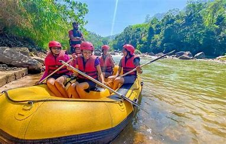

Experience the Thrill of White Water
Where every wave tells a story — and every trip becomes a memory.
Our History
Founded in 1995, White Water Rafting has been guiding adventurers through the most exciting rapids in the region. Our mission is to provide unforgettable outdoor experiences while keeping safety our top priority.
We started with just two rafts and a dream. Today, we are proud to have guided thousands of happy customers on thrilling rafting trips of all skill levels.
Our Adventures

Face the roaring challenge of “The Devil’s Teeth.” This wild rapid will get your adrenaline pumping and test your teamwork as you paddle through one of the most thrilling sections of our river. Perfect for true adventure seekers who crave an unforgettable experience.
Known for its heart-pounding waves and powerful currents, Big Mallard is one of our most famous rapids. It's a crowd favorite for those who love a good splash and the excitement of conquering powerful, foamy waters with their team.
Short on time but big on adventure? Our Half Day trip is perfect for families and groups who want a taste of white water excitement without committing to a full day. Enjoy thrilling rapids and calm scenic stretches along the way.
Spend the whole day exploring the river’s twists and turns, stopping for riverside snacks and incredible photo moments. This trip offers the perfect balance of thrill, fun, and time to truly connect with nature.
End your day with a peaceful float down the river as the sun paints the sky. This is the ultimate relaxing trip for those who want a gentle ride, stunning scenery, and time to soak in the beauty of nature.